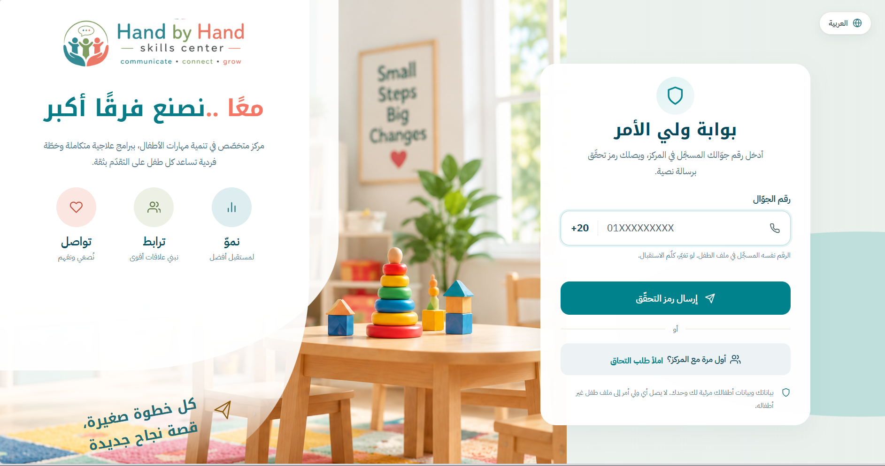

تخاطب وتنمية لغة
عمل على النطق والفهم والتعبير، وعلى وسائل تواصل بديلة عند الحاجة.
جارٍ تحميل الموقع…
مركز لتنمية مهارات الأطفال في مصر. جلسة لطفل واحد، خطة علاج بأهداف مكتوبة وقياس دوري، وأسرة ترى ما يحدث أولًا بأول.
بوابة أولياء الأمور قيد التجهيز للنشر. حتى ذلك الحين نستقبل طلبات الالتحاق عبر الهاتف والواتساب.

ثماني خدمات، تُبنى منها خطة الطفل بعد جلسة التقييم
عمل على النطق والفهم والتعبير، وعلى وسائل تواصل بديلة عند الحاجة.
مهارات اليد والحركة الدقيقة والاعتماد على النفس في مهام اليوم.
برنامج سلوكي بأهداف محددة وقياس متكرر لما يتغير فعلًا.
مهارات اللعب والانتباه والتنظيم الذاتي والتعامل مع الآخرين.
جلسة أولى نفهم فيها وضع الطفل، ومنها تُكتب الخطة وتُحدد الخدمات.
الإيقاع والصوت كمدخل للانتباه المشترك والتواصل والتنظيم.
أنشطة محسوبة للحس واللمس والتوازن حسب احتياج كل طفل.
قراءة وكتابة وحساب، ودعم موازٍ لما يدرسه الطفل في مدرسته.
لأن احتياجات كل طفل مختلفة، نوفر مجموعة من البرامج والأنشطة المتخصصة التي تدعم نموه في مختلف الجوانب.
جلسات تخاطب بالعربية والإنجليزية والفرنسية لدعم مهارات اللغة والتواصل.
عربي · English · Français
استفسر عن التوافر والمواعيد المناسبةدعم وإرشاد للأسر لمساعدتهم في التعامل مع التحديات السلوكية والتنموية.
إرشاد أسري · تحديات سلوكية وتنموية
استفسر عن التوافر والمواعيد المناسبةجلسات علاج بالموسيقى لدعم التواصل والتركيز وتنمية المهارات الاجتماعية.
التواصل · التركيز · المهارات الاجتماعية
استفسر عن التوافر والمواعيد المناسبةبرامج متخصصة في تحفيظ القرآن الكريم وتعليم التجويد للأطفال بطرق تفاعلية مناسبة لكل فئة عمرية.
حفظ القرآن الكريم · تعليم التجويد
استفسر عن التوافر والمواعيد المناسبةدورات تدريبية وإعداد أخصائيين في مختلف المجالات، أونلاين وحضوري.
تدريب أونلاين · تدريب حضوري
استفسر عن التوافر والمواعيد المناسبةبرامج فنية وإبداعية لجميع الأطفال لدعم المواهب وتنمية القدرات.
الرسم · أنشطة موسيقية وإبداعية
استفسر عن التوافر والمواعيد المناسبةبرامج وأنشطة دمج تفاعلية لتنمية المهارات الاجتماعية في بيئة طبيعية وآمنة.
أنشطة دمج · تفاعل اجتماعي
استفسر عن التوافر والمواعيد المناسبةأنشطة حركية متخصصة تساعد في تعزيز الثقة بالنفس والتوازن الحركي والمهارات الاجتماعية.
الفروسية · السباحة
استفسر عن التوافر والمواعيد المناسبةأربع خطوات من أول اتصال حتى أول جلسة
تملأ نموذجًا قصيرًا ببياناتك وبيانات الطفل وما يقلقك. لا يُنشئ الطلب ملفًا للطفل، بل ينتظر مراجعة المركز.
نتصل بك في الوقت الذي تختاره لنسأل عمّا نحتاجه ونحدد موعد التقييم.
جلسة مع الطفل يحضرها وليّ الأمر، نخرج منها بصورة واضحة عن نقاط القوة والاحتياج.
خطة مكتوبة بأهداف محددة وجدول جلسات، تُراجع دوريًا بناءً على القياس لا على الانطباع.
أربعة قرارات في طريقة عملنا، لا شعارات
لا جلسات جماعية ولا فصول. هذا اختيار وليس ظرفًا: الجلسة كلها لطفل واحد، وهكذا بُني النظام الذي يديرها.
تتابع الأسرة الجلسة لحظة حدوثها من بوابتها. ولا شيء يُسجَّل أو يُحفظ أو يُنزَّل: المنع مفروض في قاعدة البيانات نفسها، لا في سياسة مكتوبة على ورق.
لكل طفل أهداف محددة تُقاس على فترات، وتقارير تقدّم يقرأها وليّ الأمر في بوابته.
كل موعد وجلسة وملاحظة وفاتورة في ملف واحد للطفل، لا في دفاتر متفرقة.
البثّ مباشر فقط. لا يوجد تسجيل ولا مكتبة مقاطع ولا رابط تنزيل، ولا طريقة لمشاهدة الجلسة بعد انتهائها. هذه ليست إعدادًا يمكن تغييره لاحقًا؛ النظام لا يقبل تخزين مقطع من الأساس.
بعد تسجيل الطفل في المركز، لوليّ أمره حساب يرى منه ملف طفله وحده.
وليّ الأمر يرى بيانات طفله فقط. الصلاحية تُفحص في الخادم عند كل طلب، ولا يغيّرها تعديل الرابط.

أخصائيون في التخاطب والعلاج الوظيفي وتحليل السلوك والتكامل الحسي
نعمل معًا من أجل مستقبل أفضل لأطفالنا

أستاذ التربية الموسيقية والعلاج بالموسيقى

محاضر في الصحة النفسية والإرشاد النفسي

أخصائية تخاطب وتنمية مهارات

جلسات القرآن الكريم لجميع الأعمار
مكان مخصص لآراء حقيقية، تُنشر بموافقة أصحابها
أول مرة كنت أسمع عن أن الموسيقى تقدر تكون وسيلة علاج. مع د. نرمين شفنا فرق كبير مع ابنتي، تعامل رائع واهتمام واضح بكل تفاصيل الجلسات. شكرًا دكتورة على دعمك وصبرك ومتابعتك المستمرة.
دكتور محمد مفيش كلمة شكر ولا وصف لحضرتك. كنت بتعمل معانا حرفيًا معجزات مع ابني، كنت بتحترمنا وبتتعامل معانا واسم شرف ليا إن كنت من الأيام تلميذة حضرتك. ربنا يبارك فيك وفي كل حاجة بتقدمها لأطفالنا.
أنا بكل صراحة مبسوطة جدًا من تطور ابني، وأهداف البيت اللي بدأ فيها أنا شايفة نتيجتها عندي بالبيت، وحصل ليه تطور بالشهرين دول. شكرًا من قلبي لكل فريق مركز هاند باي هاند.
ثقتكم هي قصتنا
املأ طلب التحاق، ونتصل بك لتحديد موعد التقييم.
نرد خلال ساعات العمل
يُضاف قريبًا
يسهل الوصول إلينا عبر محور محمد نجيب.
بالقرب من كوبري الرحاب والتجمع الخامس.
يمكنك استخدام خرائط Google للوصول بدقة.
سيتم فتح الموقع في تبويب جديد على Google Maps
نعم. كل جلسة لطفل واحد، ولا توجد جلسات جماعية.
لا. البثّ مباشر أثناء الجلسة فقط، ولا يُسجَّل ولا يُحفظ ولا يمكن تنزيله أو مشاهدته لاحقًا.
وليّ أمر الطفل، والأخصائيون المسؤولون عنه، وإدارة المركز في حدود عملها. لا يصل وليّ أمر إلى بيانات طفل آخر، والخادم هو ما يفرض ذلك عند كل طلب. وكل قراءة لبيانات حسّاسة تُسجَّل.
يصل الطلب إلى المركز للمراجعة ولا يُنشئ ملفًا للطفل بنفسه. نتصل بك في الوقت الذي اخترته لاستكمال البيانات وتحديد موعد التقييم.
لا. كثير من الأطفال الصغار بلا رقم قومي بعد، والحقل اختياري تمامًا في طلب الالتحاق.
يحدد المركز مدة الجلسة وتكلفتها حسب الخدمة. تواصل معنا للتفاصيل الحالية.